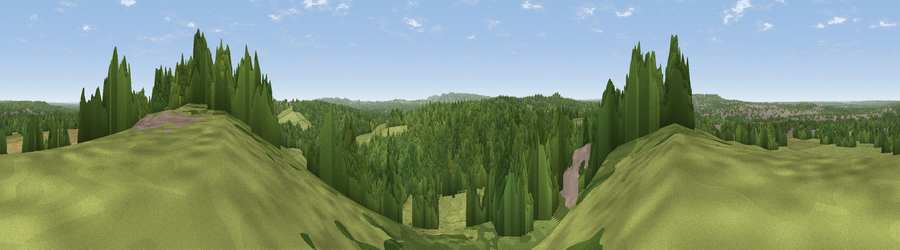

Viewpoint near Seale
#21739 in England · top 16% of its area beats it · near SealeThe view, rendered

A 360° render of this exact spot computed from the terrain model, tree cover and land cover — summer colours, afternoon light, calibrated against photographs of famous viewpoints. Real trees, hedges and buildings will differ in detail.
The panorama
Grey silhouette: terrain skyline in each direction (720 bearings, Earth curvature and refraction included). Dashed green: skyline with trees (+15 m) and buildings (+8 m) as obstacles. Blue strip: how far the ground is visible on each bearing.
Where the view opens
Wedge length = distance to the farthest visible ground on that bearing (vegetation-aware). Rings at 10, 25 and 50 km.
What fills the view
53% woodland · 32% grassland · 8% cropland · 6% built-up
Angular shares of the visible panorama (visual magnitude), not map area. Landscape diversity 0.47 (0–1 Shannon).
Key numbers
More beautiful places nearby
The staircase of upgrades: each row has a higher view potential than everything closer. Driving times are estimates from straight-line distance, calibrated against real road routing — check an actual route before setting out.
| Place | Direction | Drive | Score |
|---|---|---|---|
| Viewpoint near Puttenham | E · 1 km | ~4 min | 62.0 |
| Viewpoint near Wanborough | E · 4 km | ~10 min | 65.5 |
| Viewpoint near Compton | E · 6 km | ~13 min | 66.7 |
| Viewpoint near Hascombe | SE · 14 km | ~25 min | 70.1 |
| Viewpoint near Fernhurst | S · 19 km | ~33 min | 75.1 |
| Beacon Hill | SSW · 31 km | ~49 min | 85.8 |
| Chanctonbury Ring | SSE · 43 km | ~63 min | 87.0 |
| Firle Beacon | SE · 72 km | ~96 min | 88.9 |
51.22658, -0.71286 · source: screening · position refined by local search. Computed location — check access rights before visiting.